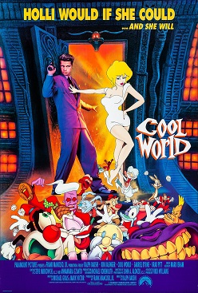

Cool World

Ralph Bakshi
1992
147 minutes
Wikipedia link
IMDB link
TV Tropes link
This is text.
Time to choose something different:
- That was a nice interlude, but I guess we can go back to the world of scheming yuppie scum! - Turn to section 141
- Cartoon Kim Basinger is pretty hot, but she's got nothing on flesh-and-blood Pam Grier! - Turn to section 159
- Too bad Bruce Chatwin never made it to the Cool World in all his nomadic wanderings... - Turn to section 96